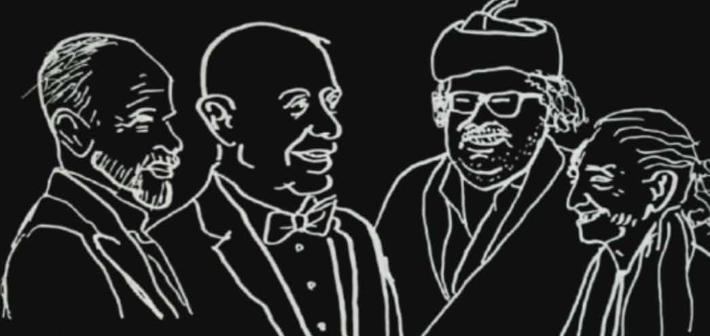
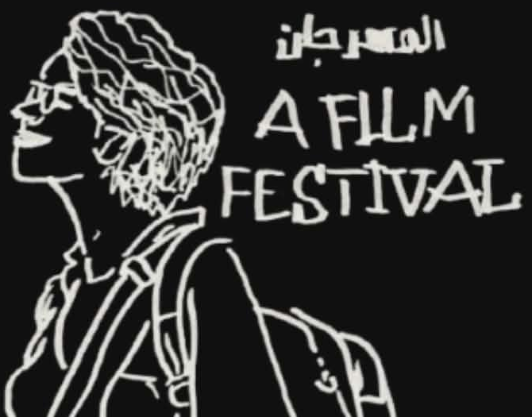

Carthage
Film Fest

After being present at the Carthage Film Festival (JCC) for two consecutive years, it became clear to me—clear as day—that this festival is always a battleground: full of drama, contradictions, and small failures stacked on top of each other. During the festival, you’ll find everyone complaining about everything ; Literally. A chaotic playground of state-declared professionals, self-claimed professionals, self-claimed amateurs, and state-declared amateurs, all fighting over something we generously still call an industry.
And honestly, this chaos makes sense !
This is by far the biggest cinematic event in the country. It happens in the capital, it’s state-backed, symbolically heavy, historically loaded. So naturally, you’ll find all segments of the field concentrated in one place. The ecosystem is fragmented, and the festival becomes the only moment where these fragments collide.
Here’s a rough taxonomy of the people you’re most likely to meet :
1.The Ministry Oligarchs .
These are the people you’ll find in any ministry, not just culture. They look typical—same dress code, same vocabulary, same recycled expressions. They all talk about “developing the sector”, a phrase they repeat with religious discipline. I honestly don’t know what they mean by it, and I’m not convinced they do either.
2.The Friends of the Oligarchs
Equally typical, equally predictable. Usually friendly older people—at least until you ask them about the financial aid they received. Most of them worked in or around the ministry for a while, then transitioned into filmmaking. Their films, strangely enough, tend to automatically land festival selections. A mystery, surely.
3.The Trying-to-be-a-Blockbuster Creature
Some of these overlap with the previous category, but this group deserves its own mention. These are the Marvel-impressed kids who want to become Martin Scorsese or something. Cinema, for them, is primarily about revenue. The film is a product, the audience is a market, and everything else is decoration. That’s it.
4.The “Anti-System”
This is where it gets messy, because this is the largest group. Some readers might disagree, but just take a walk through Cité de la Culture during JCC and listen closely: everyone claims they’re anti-system. The real question is—anti which system, exactly ?
4.The “Anti-System”
Anti-system temporarily
Anti-system because they didn’t get funding this year. Next year is negotiable.
Anti-system in artistic terms
Usually conceptualists or dadaists trying to enforce their personal taste as a moral position. The system is bad because it doesn’t understand them.
Anti-system politically
A large and diverse team: feminists, LGBTQ activists, radical leftists, and recently—even radical right figures. Yes, seriously. Not even ironically.
Anti-system logistically
People who work within the festival or orbit around it, focusing on technical failures, bad planning, missing badges, broken schedules. Their rebellion is administrative.
Anti-system this anti-system that ? Anti-system my ass
in this festival the term is so overused it lost it’s meaning completly ...
The truth is: we’re all absorbed by the system by now. The healthiest thing you can do is to stop pretending otherwise. Experience the festival through your small, personal lens. Don’t force yourself to be “professional.” Don’t network out of obligation. Don’t perform intelligence; just be yourself
Watch some great films . Curse at them... Watch some films that taste like ass... Curse at those too .
Have beers with your friends. Live the real nightlife of Centre-Ville with the youth. That’s what I love about JCC: its insane consistency in putting people together—and somehow making them hate each other at the same time.
If you want the official history and ideological foundations of the festival, go ask Mohamed Challouf. He knows best, and he’s one of the few who actually safeguards the archives from personal distortions.
But if you want to feel the festival , its contradictions, its absurdity, its intimate chaos—watch A Film Festival by Maram Hammami. That film understands JCC better than most panels ever will.
